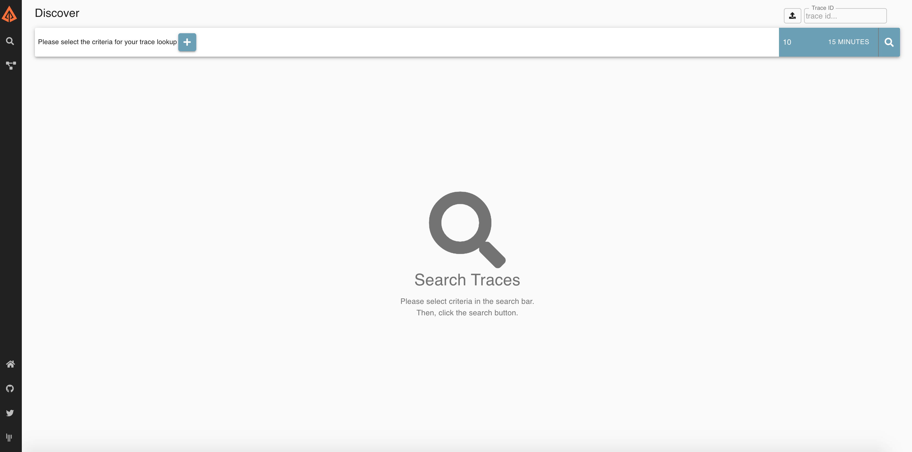

Zipkin是一种分布式跟踪系统，它有助于收集解决微服务架构中得延迟问题所需的时序数据，它管理这些数据的收集和查找。
下载 官方推荐直接下载打包好的应用，建议使用docker镜像或者jar
使用官方一键脚本
1 | curl -sSL https://zipkin.io/quickstart.sh | bash -s |
docker
1 | docker run -d -p 9411:9411 openzipkin/zipkin |
访问
任一方式启动后，访问 http://localhost:9411/zipkin/ ，如下图

项目集成
2.pom.xml 配置
增加如下依赖
1 | <dependency> |
如果项目中包含 aspectjweaver 这个jar ，需要指定jar包版本为1.8.10，否则项目启动会出错
1 | <dependency> |
配置采样等参数
1 | #zipkin配置 # 指定了 Zipkin 服务器的地址 |
服务调用以后，就可以看到具体的调用请求时间，但是在这个过程中也碰到了一些问题
- 如果屏蔽一些接口记录，例如 健康检查会产生大量的无用数据，影响查询
- 如果使用mysql查询会有一定的影响，官方也不建议使用
- 使用官方的jar后，无法进行改造，满足不了一些额外的需求
- 存储数据安全规范等问题
如果使用ES进行存储（建议使用）
1 | STORAGE_TYPE 指定存储类型 ES_HOSTS es ip 通过逗号隔开，可以使用多个，ES_USERNAME ES用户名 ES_PASSWORD ES密码 ES_INDEX 自定义存储索引 |